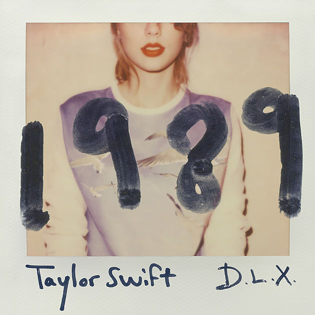

ขณะนี้คุณไม่สามารถสั่งซื้อสิ้นค้าได้ชั่วคราว
ขออภัยในความไม่สะดวกเนื่องจากเว็บไซต์นี้เป็นเวอร์ชั่นทดลอง
Taylor Swift
๐ เทย์เลอร์ สวิฟต์ (อังกฤษ: Taylor Swift)
๐ เป็นสตูดิโออัลบั้มแรกของนักร้อง-นักแต่งเพลงชาวอเมริกัน เทย์เลอร์ สวิฟต์
๐ ออกจำหน่ายเมื่อปลายปี ค.ศ. 2006 วันที่ 24 ตุลาคม
๐ โดยสังกัดบิกแมชีนเรเคิดส์ขณะสวิฟต์อายุ 16 ปี
๐ สวิฟต์แต่งเพลงในอัลบั้มในระหว่างเรียนชั้นปีที่ 1 ในไฮสกูล
ราคา 1300 บาท
สั่งซื้อ
Fearless
๐ เฟียร์เลส (อังกฤษ: Fearless)
๐ เป็นสตูดิโออัลบั้มที่ 2 ของเทย์เลอร์ สวิฟต์ นักร้องสาวเพลงคันทรี-ป็อป
๐ ออกจากจำหน่ายเมื่อวันที่ 11 พฤศจิกายน พ.ศ. 2551 ในประเทศสหรัฐอเมริกา
๐ อัลบั้มนี้ออกครั้งแรกก็ติดอันดับ 1 ในบิลบอร์ด 200 จำหน่ายได้ 592,304 แผ่นในสัปดาห์แรก
๐ โดยเป็นศิลปินหญิงที่มีอัลบั้มขายดีที่สุดในสัปดาห์แรก
๐ เป็นอัลบั้ม Fearless ยังเป็นอัลบั้มแรกที่ขายได้หนึ่งล้านแผ่นในปี พ.ศ. 2552 ในเดือนกันยายน
๐ พ.ศ. 2552 RIAA ได้จัดอัลบั้มนี้ให้มียอดขายระดับ 4x แพลตินัม
ราคา 1300 บาท
สั่งซื้อ
 Speak Now
Speak Now
๐ สปีกนาว (อังกฤษ: Speak Now)
๐ เป็นสตูดิโออัลบั้มที่สามของนักร้องนักแต่งเพลงชาวอเมริกัน เทย์เลอร์ สวิฟต์
๐ ออกจำหน่ายวันที่ 25 ตุลาคม ค.ศ. 2010 ผ่านสังกัดบิกแมชีนเรเคิดส์
๐ การผลิตอัลบั้มเริ่มขึ้นระหว่าง ค.ศ. 2009-2010 ที่ห้องอัดเสียงหลายแห่ง
๐ บันทึกเสียงโดยสวิฟต์ และนาธาน แชปแมน สวิฟต์เขียนเพลงเองทั้งอัลบั้มเช่นเดียวกับอัลบั้มก่อนหน้า เฟียร์เลส (2008)
๐ สปีกนาวเพิ่มรูปแบบแนวเพลงคันทรีป็อปจากอัลบั้มก่อนหน้า และนำเสนอเนื้อหาในเนื้อเพลงเกี่ยวกับความรัก ความใคร่ และความอกหัก
ราคา 1300 บาท
สั่งซื้อ
Red
๐ เรด (อังกฤษ: Red)
๐ เป็นสตูดิโออัลบั้มลำดับที่ 4 ของนักร้องนักแต่งเพลงชาวอเมริกัน เทย์เลอร์ สวิฟต์
๐ อัลบั้มวางจำหน่ายเมื่อวันที่ 22 ตุลาคม ค.ศ. 2012 ผ่านสังกัดบิกแมชีนเรเคิดส์
๐ ชื่ออัลบั้มมีแรงบันดาลใจจาก "ความสัมพันธ์กึ่งเป็นพิษ" (semi-toxic relationships) ที่สวิฟต์ประสบในระหว่างการทำอัลบั้ม
๐ สวิฟต์กล่าวถึงอารมณ์ดังกล่าวว่า "อารมณ์สีแดง" เนื่องจากความเข้มข้นและวุ่นวาย
๐ อัลบั้มเรดให้สัมผัสถึงรูปแบบความรักและความอกหักที่เป็นเอกลักษณ์ของสวิฟต์ จากมุมมองที่เป็นผู้ใหญ่ขณะที่ยังมีเนื้อหาแบบอื่น
๐ เช่น ความมีชื่อเสียง และความกดดันจากการเป็นจุดสนใจของประชาชน
ราคา 1300 บาท
สั่งซื้อ

1989
๐ 1989 เป็นสตูดิโออัลบั้มลำดับที่ห้าของนักร้องอเมริกัน เทย์เลอร์ สวิฟต์
๐ ออกจำหน่ายวันที่ 27 ตุลาคม ค.ศ. 2014 โดยค่ายบิกแมชีนเรเคิดส์
๐ เธอเริ่มทำอัลบั้มในปีที่อัลบั้มเรดออกจำหน่าย และระหว่างที่มีสื่อคอยติดตามทำข่าวเกี่ยวกับเธอบ่อยครั้ง
๐ ตลอดเวลาการเขียนเพลง 2 ปี เธอร่วมงานกับโปรดิวเซอร์อย่างแมกซ์ มาร์ติน และเชลล์แบ็ก
๐ มาร์ตินได้รับหน้าที่เป็นผู้ดูแลการผลิตร่วมกับสวิฟต์ด้วย
๐ ชื่ออัลบั้มมีแรงบันดาลใจจากกลิ่นอายเพลงป็อปในคริสต์ทศวรรษ 1980 โดยเฉพาะในปีเกิดของเธอ
ราคา 1300 บาท
สั่งซื้อ
Reputation
๐ อัลบั้มนี้ยังไม่ได้ถูกปล่อยย่างเป็นทางการ ซึ่งจะปล่อยอัลบั้มเต็มในวันที่ 10 พฤศจิกายน ค.ศ.2017
สั่งซื้อ